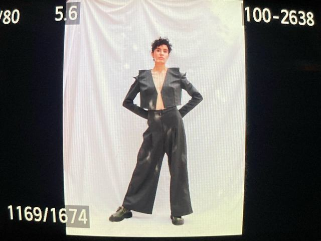
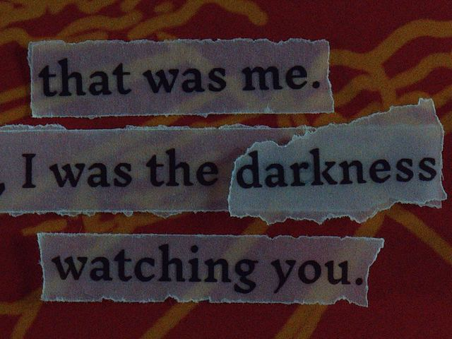
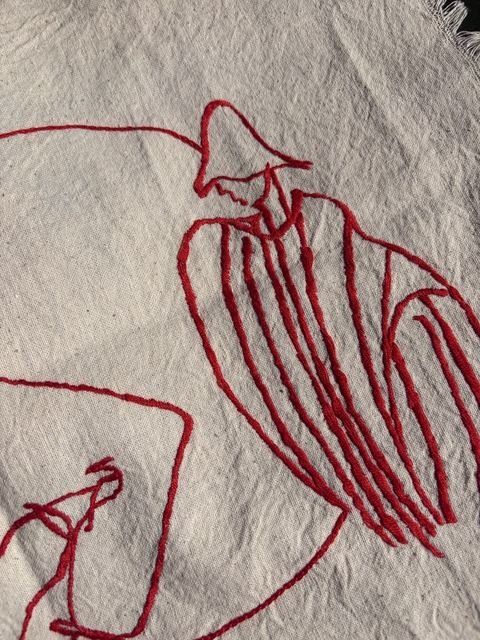

Fashion design · costume · textile stories
Azarnoosh Hs
I make hats with personalities, corsets with backbone, and artist books where the shadow does the talking.
Tehran → Gent. Pattern drafting, sewing, Iranian embroidery, illustration — and the occasional flying frisbee.
Projects, in order of appearance
-
01

100Kolah — the hat project
A hundred hats, each with its own personality. Dripping brims, strawberry seeds, zero restraint.
Have a look → -
02

Tailoring & costume
Corsets with backbone, jackets with shoulders that mean it.
Have a look → -
03
Moving pictures
A short film from the studio floor.
Have a look → -
04

The shadow game — an artist book
A day in the life, narrated by a shadow. Silkscreen, torn paper, mild menace.
Have a look → -
05

Red thread — embroidery & print
Drawings in red thread, hung on warm café walls in Gent.
Have a look →